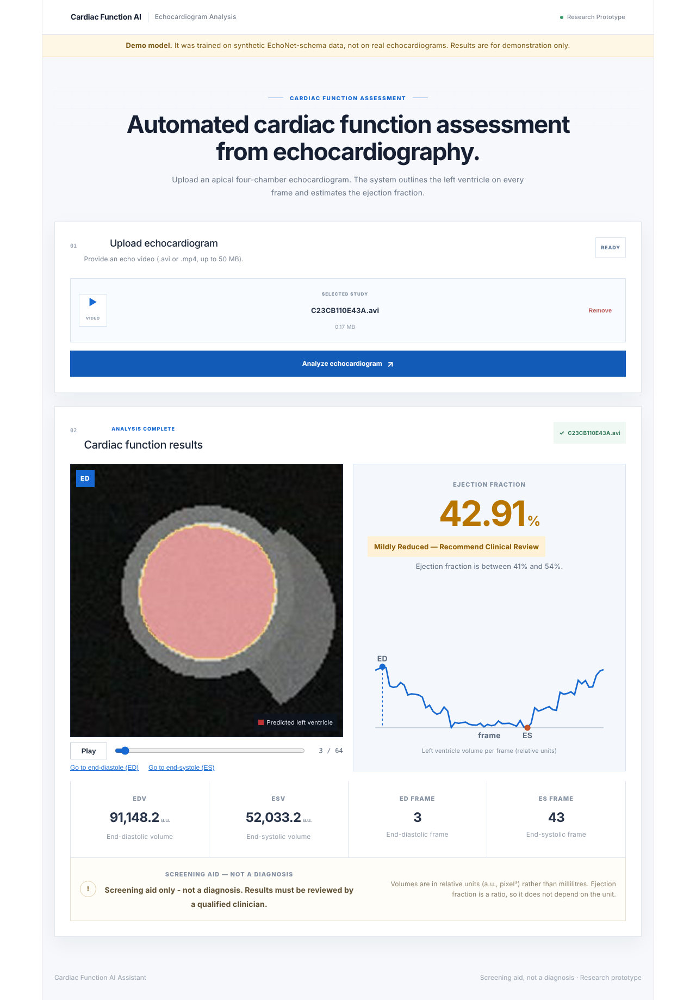

Computer vision · Featured
Cardiac Function AI Assistant
A web app that segments the left ventricle in echocardiogram videos, estimates ejection fraction and gives a screening flag: Normal, Mildly Reduced or Reduced.

- Echo videoFrames from the scan
- SegmentDeepLabV3-ResNet50
- MeasureSimpson's method of disks
- ScreenEjection fraction and flag
Built with PyTorch transfer learning (BCE + Dice loss), a FastAPI service and a React front end. It ships with 21 pytest cases, Ruff linting, a GitHub Actions CI/CD pipeline and a multi-stage Docker image deployed on Hugging Face Spaces.
Trained and tested on a synthetic EchoNet-format dataset (Dice 0.86). Validation on real data is planned.
- Python
- PyTorch
- OpenCV
- FastAPI
- React
- Docker
- GitHub Actions